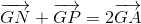
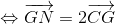

Vectorul de poziţie al centrului de greutate al unui triunghi. Concurența medianelor unui triunghi
Dacă ar fi să ne gândim la o definiție a centrului de greutate, putem spune că el se află în punctul unde un corp stă în echilibru.
Propoziția G19: Centrul de greutate al unui sistem
Dacă avem mai multe puncte în plan, notate , , , ,  , cu
, cu  , atunci centrul de greutate al acestui sistem de puncte este un punct
, atunci centrul de greutate al acestui sistem de puncte este un punct  , cu proprietatea că:
, cu proprietatea că:
.
Mai jos, avem reprezentat un astfel de centru de greutate:
.jpg)
Fixăm un punct  în plan. Calculăm vectorii de poziție ai punctelor , , , , , .
în plan. Calculăm vectorii de poziție ai punctelor , , , , , .
.jpg)
În imaginea de mai sus am luat doar punctele , respectiv , iar celelalte se construiesc analog astfel:
.
Adunăm aceste relații și obținem că:

și pentru că
, relația de mai sus, notată cu , este echivalentă cu:
.
Așadar, relația devine:
.
Cum este nenul, putem să împărțim relația de mai sus cu  și ne rezultă că:
și ne rezultă că:
,
care este echivalentă cu:
,
adică vectorul de poziție al centrului de greutate este media aritmetică a vectorilor de poziție a punctelor , , , , , cu .
Relația lui Leibniz
O relație importantă pe care o amintim în continuare este relația lui Leibniz.
Dacă considerăm orice punct  din plan, atunci cu ajutorul relațiilor anterioare ajungem la egalitatea:
din plan, atunci cu ajutorul relațiilor anterioare ajungem la egalitatea:
.
Ca să înțelegem mai bine relațiile de mai sus, să luăm un caz particular și să îl analizăm.
Fie așadar un sistem de trei puncte ,  ,
,  .
.
Dacă notăm cu centrul de greutate al acestui sistem, atunci are loc relația:
.
Dacă considerăm un punct oarecare în planul celor trei puncte, atunci are loc relația lui Leibniz:
.
În acest caz, vectorul de poziție al centrului de greutate este:
.
Concurența medianelor unui triunghi
Ne amintim din clasa a șaptea cum centrul de greutate este intersecția medianelor sau, altfel spus, medianele unui triunghi sunt concurente.
Vom demonstra acest lucru cu ajutorul vectorilor.
Fie un triunghi  , unde
, unde  este mijlocul segmentului , respectiv
este mijlocul segmentului , respectiv  reprezintă mijlocul segmentului , iar
reprezintă mijlocul segmentului , iar  este mijlocul segmentului .
este mijlocul segmentului .
Avem următoarea figură:

Pentru că reprezintă centul de greutate, are loc relația:
.
Cu ajutorul regulii paralelogramului (prezentată în paginile anterioare), obținem că:
 
și\sau
și\sau
.
Înlocuim pe rând aceste egalități în prima relație și obținem:
- pentru avem că:

.
- pentru avem că:
.
- pentru avem că:
.
Adică
,
,
.
Din aceste trei relații, ne rezultă că perechile de vectori și ;  și , respectiv și sunt coliniari, deci tripletele de puncte , , ; , , , respectiv , , sunt coliniare.
și , respectiv și sunt coliniari, deci tripletele de puncte , , ; , , , respectiv , , sunt coliniare.
Tot din cele trei relații mai punem deduce că centrul de greutate se află la față de bază și la față de vârf.
Să luăm un exemplu ca să vedem unde anume este util să aplicăm formulele de mai sus.
Considerăm paralelogramul  , unde .
, unde .
Fie  mijlocul segmenului , iar
mijlocul segmenului , iar  mijlocul segmentului .
mijlocul segmentului .
Vom arăta că este centrul de greutate al triunghiului .
Pe figura de mai jos poți urmări datele introduse mai sus:
.jpg)
Dacă este centrul de greutate al triunghiului , atunci trebuie să existe relația:
.
Folosim regula triunghiului pentru a scrie vectorii  și , astfel:
și , astfel:
,
respectiv
.
Înlocuim aceste relații în prima relație și obținem:
Observăm că este un paralelogram; atunci, folosind regula paralelogramului ne rezultă că:
,
de unde obținem:
.